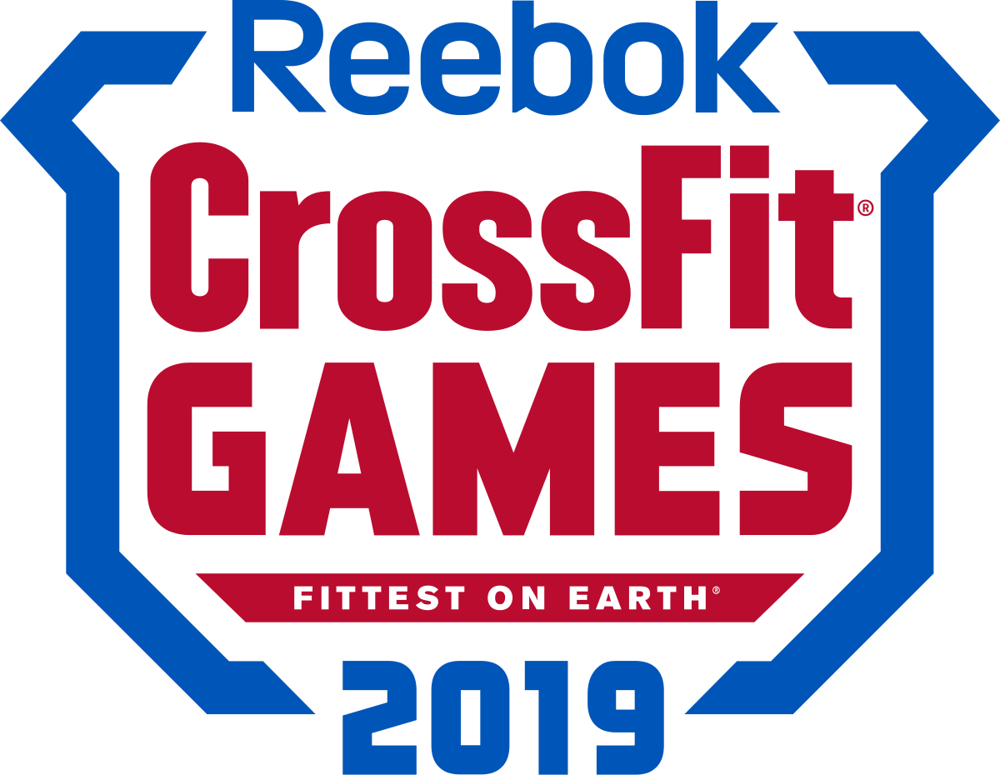

Eventos de CrossFit
Los CrossFit Games, la principal prueba de aptitud física general y general, y sus eventos clasificatorios.
Los CrossFit Games, la principal prueba de aptitud física general y general, y sus eventos clasificatorios.
| Items | Titulos y Definición | |
|---|---|---|
| Titulo | Definición | |
| CrossFit Games | ||
| 1 | THE 2020 OPEN. | En seis semanas, los atletas de todo el mundo competirán por campeonatos nacionales, enfrentarán desafíos desconocidos por primera vez y celebrarán sus logros con una comunidad mundial, que incluye todas las edades y habilidades.. |
| 2 | LA FUNDACIÓN CROSSFIT Y AHORRADA POR LA BARBELL. | El 31 de agosto de 2019, la comunidad CrossFit se reunirá junto con la Fundación y CrossFit, Inc. para participar en Salvado por la Barbell, el evento de recaudación de fondos del Día del Trabajo que apoya las oportunidades de CrossFit para los niños de todo el mundo. |
| 3 | SOLDIERS VIE IN SURVIVAL OF THE FITTEST AT 2019 CROSSFIT GAMES. | El teniente coronel Anthony Kurz y el capitán Chandler Smith tomaron todo mientras miraban alrededor del abarrotado North Field. Kurz mostró con orgullo su bandera de las Fuerzas Especiales del Ejército como un guiño a la comunidad de las Fuerzas Especiales. |
| 4 | GLOBAL COMMUNITY, GLOBAL COMPETITION | Durante esta competencia de cinco semanas, la gente común logra más de lo que creía posible, y la próxima generación de campeones nacionales será coronada. |
| 5 | OPEN-SOURCE BROADCAST OF 2019 GAMES | El nuevo enfoque servirá mejor a una comunidad global y diversa cada vez más hambrienta de CrossFit. Los CrossFit Games comienzan el 1 de agosto de 2019. |